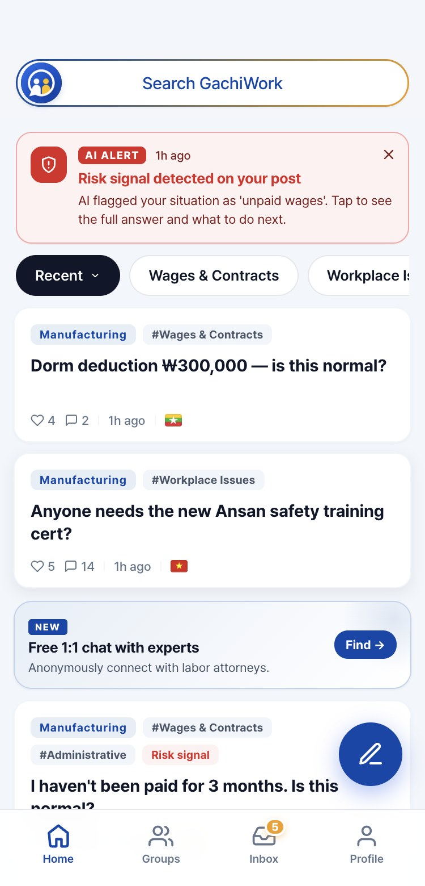

GachiWork
Define
E‑9 비자 외국인 노동자 34만 명, 사업장을 옮길 수 없고 전국에 흩어져 일함
임금 체불이나 부당한 공제를 겪어도 상담 창구는 한국어로 평일 낮에만 열리고, 물어볼 동료도 없음
그 일이 관행인지 위법인지조차 판단하기 어려운 구조적 고립
Process
팀장. 한국, 프랑스, 인도네시아 팀원과 함께 리서치를 설계하고 노사발전재단과의 소통을 맡음. 프로토타입과 소개 영상 직접 제작
노사발전재단 여주교육장에서 입국 직후 E‑9 노동자 86명 설문. 85%가 사업장 밖 동료를 한 명도 모름
국적별 페이스북 모임은 업종이 달라 답이 맞지 않음. 그래서 국적이 아니라 업종으로 묶고, AI 번역으로 다른 나라 동료와 잇는 구조로 결정
유저 테스트 4라운드. 위험 알림을 놓친다는 피드백에 알림을 맨 위로 올리고, 어려워하던 등급제는 '신뢰온도'로 바꿈
Result
질문, AI 번역, 동료 답변과 공식 정보, 위험 알림까지 핵심 흐름을 담은 클릭형 프로토타입
TAP Capstone 대상, 발명신고 1건
IHEI 워크스테이션 선정, 실제 노동자가 쓰는 파일럿으로 개발 중
Tool
Claude Code, Adobe Illustrator
